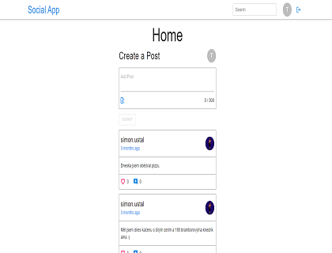
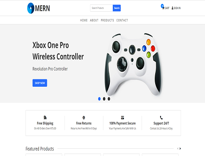
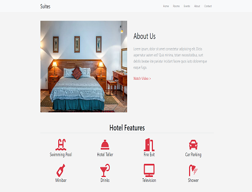
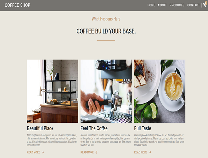
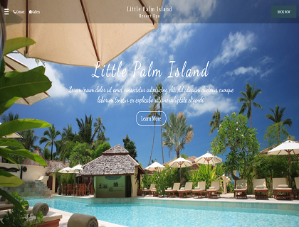
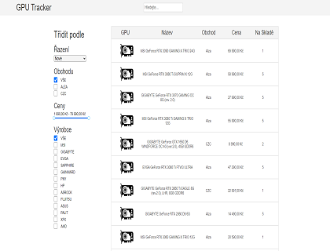

Poslední Projekty






O mě
Jsem Full-Stack developer zaměřující se z větší části na Front-End. Nejvíce se u svých projektů soustředím na jednoduchost designu a funkcionalitu.
Prvně jsem se začínal učit programovat v Pythonu, ze kterého jsem následně přešel na tvoření webu v HTML/CSS a lehkou příměsí JS. Po vytvoření několika projektů s touto kombinací jsem se začal učit React a následně přidal Express pro Back-End.
Zajímám se o Full-Stack tvorbu webu nejvíce s využitím MERN Stacku, ale nikdy se nebráním novým technologiím.